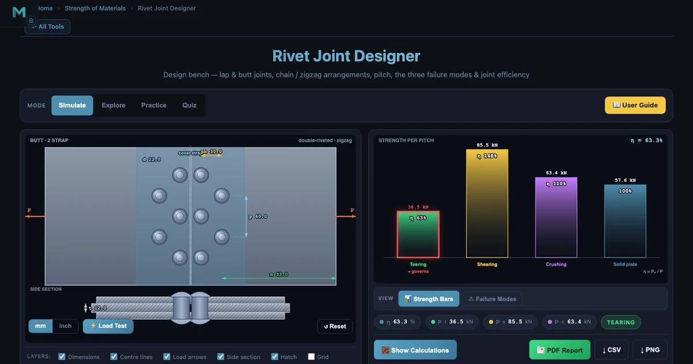
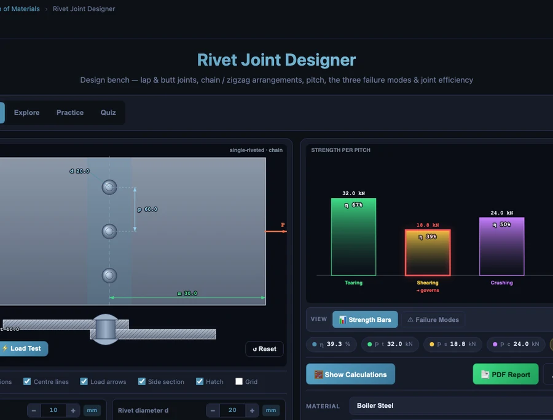

How to Design a Riveted Joint: Strength Calculations Every Engineer Should Know

- Design a riveted joint by checking four failure modes — rivet shear (P = n·(π/4)d²·τ), bearing/crushing (P = n·d·t·σ_c), plate tearing (P = (p−d)·t·σ_t), and plate edge shear (controlled by the margin rule m ≥ 1.5d); joint strength is the minimum of these.
- Size the rivet with Unwin's formula d = 6√t (mm), then round up to the nearest standard diameter — for a 10 mm plate this gives d ≈ 19 mm, so a 20 mm rivet is used.
- Joint efficiency η = (joint strength) / (solid-plate strength p·t·σ_t) × 100%; single-riveted lap joints reach only about 40–55%, while double-strap butt joints (double shear) lift this to 60–80%.
Riveted joint design is one of those topics that looks straightforward on paper and then humbles you the moment you try to compute the actual numbers. The theory is elegant — four possible ways a joint can fail, three strength formulas, and one efficiency ratio. But getting the sequence right, choosing which mode governs, and knowing when to adjust the pitch rather than the rivet diameter: that's where students (and more than a few graduates) trip up. This guide walks through the complete riveted joint design procedure from sizing the rivet diameter to verifying joint efficiency — with a worked numerical example at each step.
Why Riveted Joints Still Appear in Machine Design Courses
Welding replaced riveting for most structural and pressure vessel work after the 1940s. So why are we still teaching this? A few reasons that matter in practice.
First, the failure mode analysis for a riveted joint is a perfect training ground for general fastener design thinking. You learn to identify shear planes, calculate bearing areas, work out net tensile sections — the exact same reasoning you apply to bolted joints, welded connections, and even adhesive lap joints. Master the riveted joint calculation and everything else follows more easily.
Second, riveted joints are still specified in aircraft structures. Aluminium alloy rivets join skin panels on commercial airliners because riveting is more reliable than welding aluminium in thin sheet, and individual rivets can be inspected and replaced in service. An aerospace maintenance engineer who doesn't understand rivet shear and bearing will not last long in that industry.
Third — and here's what I've heard repeatedly from students on industrial placement — legacy plant. Boilers installed in the 1960s and 1970s, still running in some process industries, were riveted. The engineer who goes to assess one needs to know what the original design was aiming for and how to check if a repaired joint still meets the original specification. That knowledge doesn't come from a quick Google search.
The Four Failure Modes — Know All of Them Before You Size Anything
A riveted joint can fail in exactly four ways. Checking only one or two is not a design; it's guesswork. Here's the complete set:
Mode 1: Shear of the Rivet
The most intuitive failure. The rivet shank is sliced across its circular cross-section by the force trying to slide the plates past each other. In a single shear joint (lap joint), there is one shear plane. In a double shear joint (butt joint with two cover straps), there are two shear planes and the rivet can carry roughly twice the load before shearing.
\[P_s = n \cdot \frac{\pi}{4} d^2 \cdot \tau \quad \text{(single shear, } n \text{ rivets per pitch)}\]
where \(d\) is the rivet hole diameter (mm), \(\tau\) is the allowable shear stress (MPa), and \(n\) is the number of rivets per pitch length. For double shear, replace \(\frac{\pi}{4}d^2\) with \(2 \times \frac{\pi}{4}d^2\).
Mode 2: Bearing (Crushing) Failure
The rivet doesn't shear — instead, it compresses against the wall of the rivet hole, deforming both rivet and plate locally. This is sometimes called crushing failure. The bearing area is the projected area of the hole: diameter times plate thickness.
\[P_c = n \cdot d \cdot t \cdot \sigma_c\]
where \(t\) is the plate thickness (mm) and \(\sigma_c\) is the allowable bearing (crushing) stress (MPa). For mild steel plates, \(\sigma_c\) is typically 1.5 to 2× the allowable tensile stress — the local constraint of the hole wall raises the apparent crush resistance.
Mode 3: Tearing of the Plate
The plate tears across the weakest cross-section — the line through the rivet hole row. The load carrying area is reduced by the hole diameter, giving a net width of \((p - d)\) at pitch \(p\).
\[P_t = (p - d) \cdot t \cdot \sigma_t\]
where \(p\) is the rivet pitch (mm) and \(\sigma_t\) is the allowable tensile stress of the plate (MPa). This is the formula that connects pitch directly to joint strength — increasing pitch increases \(P_t\), but it also increases the strength of the equivalent solid plate, so its effect on efficiency is not as straightforward as it looks.
Mode 4: Shearing of the Plate at the Edge
If the margin \(m\) (distance from hole centre to plate edge) is too small, the plate can shear out in front of the rivet. The shearing area is two planes of area \(m \times t\) each. This mode is prevented by the standard design rule:
\[m \geq 1.5 \, d\]
Stick to this limit and Mode 4 won't govern. It's worth stating explicitly to students because it's the one failure mode that doesn't appear in the main strength calculation — it's dealt with by a geometric constraint instead.
Step 1 — Size the Rivet Diameter with Unwin's Formula
Before you calculate anything, you need a rivet diameter. Unwin's empirical formula gives a starting point that balances rivet shear against plate bearing:
\[d = 6\sqrt{t}\]
where \(d\) and \(t\) are both in millimetres. This formula comes from a regression of historical practice — it produces a rivet where shear failure and bearing failure occur at roughly the same load, which is the economically efficient design point. For a \(t = 10\) mm plate:
\[d = 6\sqrt{10} = 6 \times 3.162 = 18.97 \text{ mm} \longrightarrow \text{select } d = 20 \text{ mm (nearest standard)}\]
Standard rivet diameters (IS 1929 / BS 4620) run in increments: 10, 12, 14, 16, 18, 20, 22, 24 mm. Always round up to the next standard size — never down.
Step 2 — Compute Each Failure Mode Strength
Now the numbers. Let's work through a complete example: a single-riveted single lap joint in mild steel, the simplest possible configuration. This is deliberately the weakest case — once you understand why its efficiency is low, the value of multiple rows and butt joints becomes obvious.
Given: plate thickness \(t = 10\) mm, rivet diameter \(d = 20\) mm, pitch \(p = 60\) mm (trial value \(= 3d\), the recommended minimum), one rivet per pitch, single shear. Allowable stresses: \(\tau = 60\) MPa (rivet shear), \(\sigma_c = 120\) MPa (bearing), \(\sigma_t = 80\) MPa (plate tensile).
Rivet shear (Mode 1):
\[P_s = \frac{\pi}{4} \times 20^2 \times 60 = \frac{\pi}{4} \times 400 \times 60 = 18{,}850 \text{ N} = \mathbf{18.85 \text{ kN}}\]
Bearing (Mode 2):
\[P_c = 20 \times 10 \times 120 = 24{,}000 \text{ N} = \mathbf{24.0 \text{ kN}}\]
Plate tearing (Mode 3):
\[P_t = (60 - 20) \times 10 \times 80 = 40 \times 10 \times 80 = 32{,}000 \text{ N} = \mathbf{32.0 \text{ kN}}\]
The margin check: \(m \geq 1.5 \times 20 = 30\) mm. If the plate is 60 mm wide with rivets centred, margin = 30 mm — just acceptable.
Step 3 — Identify the Governing (Weakest) Mode
The joint can carry only as much load as its weakest link allows:
\[P_{\text{joint}} = \min(P_s,\, P_c,\, P_t) = \min(18.85,\, 24.0,\, 32.0) = \mathbf{18.85 \text{ kN}}\]
Shear governs. This is the most common outcome for single-shear lap joints with standard mild steel allowables. The rivet gives out before the plate tears or the hole wall crushes. If you increase the pitch, tearing resistance drops (\(P_t\) decreases with larger \(p\)) and shear stays fixed — shear will still govern, and efficiency gets worse. The only way to significantly improve a single-shear joint is to add more rivet rows or switch to a double-shear butt configuration.

Step 4 — Calculate Joint Efficiency
Efficiency compares what the joint actually carries against what a solid plate of the same width and thickness could carry:
\[\eta = \frac{P_{\text{joint}}}{P_{\text{solid}}} \times 100\% \qquad \text{where } P_{\text{solid}} = p \cdot t \cdot \sigma_t\]
For our example:
\[P_{\text{solid}} = 60 \times 10 \times 80 = 48{,}000 \text{ N} = 48.0 \text{ kN}\]
\[\eta = \frac{18.85}{48.0} \times 100 = \mathbf{39.3\%}\]
Thirty-nine percent. The single-riveted lap joint is carrying less than half the load that the undrilled plate could. That's not a design error — it's a fundamental limitation of the single-shear single-row configuration. Industrial codes (IS 2825, ASME Section I) specify minimum efficiencies: typically 65% for longitudinal boiler seams and 55% for circumferential seams. To reach those targets you need double-riveted or triple-riveted butt joints.
Here's the comparison that makes the point most clearly. Switch to a double-strap butt joint with the same rivet and plate, optimising pitch so tearing and bearing balance:
\[P_s^{\text{double shear}} = 2 \times \frac{\pi}{4} \times 20^2 \times 60 = 37.7 \text{ kN}\]
Now bearing governs at 24.0 kN. Setting \(P_t = P_c\): \((p - 20) \times 10 \times 80 = 24{,}000\), giving \(p = 50\) mm. Efficiency:
\[\eta_{\text{butt}} = \frac{24{,}000}{50 \times 10 \times 80} \times 100 = \frac{24{,}000}{40{,}000} = \mathbf{60\%}\]
Sixty percent — a 53% improvement in joint efficiency, just by switching from lap to double-strap butt. Add a second row in zigzag and you push past 70%. That's the design progression: lap → single-strap butt → double-strap butt → double-riveted double-strap — each step closes the gap between the riveted joint and the solid plate.
Step 5 — Verify Pitch Limits
Pitch doesn't only affect tearing strength. There are practical limits from both structural and manufacturing considerations:
\[p_{\min} = 3d \qquad p_{\max} = 3t + 50 \text{ mm (or } 16t\text{, whichever is less for compressed plates)}\]
The minimum pitch of \(3d\) prevents the plate from being so weakened by adjacent holes that it splits between them rather than at a single critical section. The maximum pitch prevents the plate from buckling or bulging between rivet rows when the joint is in compression. For our example (\(d = 20\) mm, \(t = 10\) mm):
\[p_{\min} = 3 \times 20 = 60 \text{ mm} \qquad p_{\max} = 3 \times 10 + 50 = 80 \text{ mm}\]
Our chosen pitch of 60 mm sits exactly at the minimum. That's acceptable for a preliminary design — it keeps the joint compact and maximises tearing resistance. If structural reasons require a wider pitch, efficiency will fall unless more rivets per row are added.
How I Teach This Sequence in Class
The classic mistake students make is attacking all three failure mode equations simultaneously, plugging in numbers without a clear order, then wondering why their results don't match the textbook. I've restructured the sequence as a one-page decision flowchart:
Warm-up (10 min). Open the Rivet Joint Designer and set the joint type before touching a calculator. Is it a lap joint or a butt joint? Single strap or double strap? The plan view and side section draw instantly, so students can count the shear planes before computing \(P_s\). Those who skip this step consistently write a double-shear formula for a lap joint.
Sizing (15 min). Apply Unwin's formula, select the standard diameter. I make students write down their selected \(d\) and \(t\) before touching a calculator.
Mode calculations (20 min). All three formulas, clearly labelled. I require students to underline the governing value before writing the joint strength. Unmarked minimum values get marked wrong — not as a penalty, but because identifying which mode governs is the engineering insight, not just producing the number.
Efficiency and interpretation (10 min). Compute \(\eta\), compare to the code requirement for the application in question (boiler shell, bridge gusset, aircraft skin). If efficiency falls short, discuss what changes — more rows, different joint type, higher-strength rivet — would fix it. This is where the real learning happens. Any student can substitute numbers. Interpreting what the answer means and knowing what to change requires understanding.
For a related look at the bolted-joint equivalent — preload, proof load, and fatigue analysis — the Bolted Joint Design Calculator guide on this blog walks through the same kind of governing-failure-mode analysis for threaded fasteners. The parallels are illuminating.
Try It Yourself
All tools below are free — no account, no download.
Key Takeaways
- Every riveted joint design requires four checks: rivet shear, bearing (crushing), plate tearing, and plate edge shear. Only the first three appear in the main calculation; edge shear is controlled by the margin rule \(m \geq 1.5d\).
- Start with Unwin's formula \(d = 6\sqrt{t}\) to size the rivet diameter, then round up to the nearest standard size — never down.
- Joint strength equals the minimum of the three calculated failure mode strengths. Identifying which mode governs — and understanding why — is the core engineering judgment in riveted joint design.
- Single-riveted lap joints typically achieve only 40–55% efficiency because rivet shear governs before the full plate capacity is reached. Switching to a double-strap butt joint (double shear) can lift efficiency to 60–70% with the same rivet and plate.
- Zigzag rivet arrangements outperform chain arrangements because staggered holes mean no single cross-section through the plate passes through more than one hole, giving a wider net section in tearing.
- Boiler and pressure vessel codes (IS 2825, ASME Section I) specify minimum joint efficiencies — typically 65% for longitudinal seams and 55% for circumferential seams. Design to the code requirement, not just to structural adequacy.
- Pitch has practical limits: \(p_{\min} = 3d\) to prevent inter-hole splitting, and \(p_{\max} = 3t + 50\) mm to prevent plate buckling between rows.
Frequently Asked Questions
What are the four failure modes to check when designing a riveted joint?
A riveted joint can fail in four ways: (1) Shear of the rivet — the rivet shank is cut across its cross-section by the applied load; (2) Bearing (crushing) — the rivet compresses and deforms against the plate hole wall; (3) Tearing of the plate — the plate tears across the row of rivet holes under tension; (4) Shearing of the plate — the plate material between the rivet hole and the plate edge shears out. The design must be checked against all four modes, and the governing (lowest) strength determines the joint capacity.
What is Unwin's formula for rivet diameter?
Unwin's empirical formula gives the rivet diameter as \(d = 6\sqrt{t}\), where \(d\) is the rivet hole diameter in millimetres and \(t\) is the thicker plate thickness in millimetres. For example, a 10 mm plate gives \(d = 6\sqrt{10} \approx 19\) mm, so a standard 20 mm rivet is selected. The formula is derived from empirical data and produces a rivet diameter that balances shear strength of the rivet against bearing strength on the plate — if the rivet is too small, it shears before the plate bears; too large, and the plate tears around the hole.
How is joint efficiency calculated and what is a typical value?
Joint efficiency \(\eta = \frac{P_{\text{joint}}}{P_{\text{solid}}} \times 100\%\), where \(P_{\text{solid}} = p \times t \times \sigma_t\). A single-riveted lap joint typically achieves 40–55% efficiency because shear of the rivet governs before the full plate capacity is reached. Double-riveted butt joints with two cover straps (double shear) can reach 70–80%. Boiler design codes (IS 2825, ASME Section I) specify minimum efficiency values by joint type — typically 65% or above for longitudinal drum seams.
When should a butt joint be used instead of a lap joint?
Lap joints are simple and economical but introduce an eccentricity — the load path shifts as it crosses the overlap, creating a bending moment that tries to straighten the joint. This secondary bending reduces effective strength and is why lap joints are limited to light-duty or non-pressure applications. Butt joints with cover straps keep both main plates in the same plane, eliminating the eccentricity. Butt joints also allow double-strap configurations where each rivet is in double shear (two shear planes), nearly doubling rivet shear capacity. For boilers, pressure vessels, and primary structural connections, butt joints are mandatory.
Why does zigzag riveting give better joint efficiency than chain riveting?
In chain riveting, holes in adjacent rows are aligned — the weakest cross-section through the plate contains a hole from every row, so the effective plate area is reduced by multiple holes simultaneously. In zigzag riveting, holes in adjacent rows are staggered, so no single cross-section passes through holes in more than one row at a time. The governing cross-section for tearing contains only one hole per pitch, giving a wider net section and higher tearing resistance. Zigzag arrangements also distribute load more uniformly across the joint width. For this reason, the double-riveted zigzag butt joint is the highest-efficiency standard configuration.
Riveted joint design is a compact but deceptively rich topic. Four failure modes, one efficiency metric, and a clear step-by-step procedure — but each step requires you to understand the physics behind the formula, not just the formula itself. The student who asks "why does increasing the pitch not improve efficiency when shear governs?" is starting to think like a designer. That's the question worth spending time on.
Open the Rivet Joint Designer alongside your calculations. Set the joint type, dial in your plate thickness, and watch the three failure-mode bars update as you adjust the pitch. Hit the load-test button and let the simulator show you which mode snaps first. The visual and the numerical belong together.